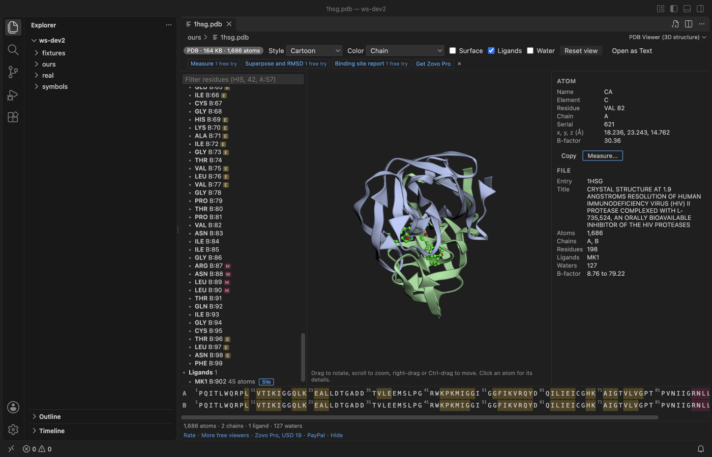

PDB Viewer & Protein Structure
PDB Viewer & Protein Structure, a VS Code extension by Zovo
Open PDB, mmCIF, SDF, MOL2, XYZ, GRO and PQR files in VS Code as a 3D protein or molecule model, with a tree of chains, residues and ligands and the sequence below. Made by Zovo.
Free, MIT license. Needs VS Code 1.75.0 or newer. Extension ID zovo.zovo-pdb-viewer, version 0.1.0.

Free, with no account and no network calls:
- Opens .pdb, .ent, .cif, .mmcif, .pqr, .sdf, .mol, .mol2, .xyz and .gro files, and gzipped .pdb.gz, .ent.gz, .cif.gz and .mmcif.gz downloads, as a 3D model.
- Cartoon, ball and stick, sticks, spheres or lines, with an optional surface. Color by chain, residue type, element, B-factor or secondary structure.
- A side tree of chains, residues and ligands with a filter. Click a residue to zoom to it, open it to list its atoms.
- Click an atom to see its name, element, residue, chain, serial number, coordinates and B-factor.
- A sequence strip for each chain, linked to the 3D view both ways.
- NMR models and multi-frame XYZ, SDF or GRO files: pick the model or frame to show.
- Works the same in Remote SSH, WSL and container windows: VS Code reads the file where it is and hands it to the viewer, so you do not copy cluster files to your computer first. No PyMOL or other program is needed.
Zovo Pro: USD 19 once, for the Pro tools in every Zovo extension. Each Pro tool has 1 free try on your computer first:
- Measure: distances, angles and dihedrals by clicking atoms, hydrogen bond candidates and contacts within a distance you choose, drawn in the 3D view and saved as CSV.
- Superpose and RMSD: fit a second structure onto the open one on sequence-matched C-alpha atoms. You get the RMSD overall, per chain and per residue, both models overlaid in 3D, a CSV table and the moved structure as a PDB file.
- Binding site report: the residues within a distance of a ligand, with the closest atoms, contact counts and hydrogen bond candidates, a focused 3D view, a CSV table and a PNG image.
Questions people ask
Is PDB Viewer & Protein Structure free?
Yes. PDB Viewer & Protein Structure is free and MIT licensed.
How do I install PDB Viewer & Protein Structure?
Click "Install in VS Code" above, or search for zovo.zovo-pdb-viewer in the Extensions view.
How to use it
- Click a structure file in the Explorer. It opens in the viewer. To read the text instead, click Open as Text in the toolbar or the file icon at the top right.
- Drag to rotate, scroll to zoom, right-drag or Ctrl-drag to move. Reset view fits the whole structure again.
- Type in the filter above the tree: a residue name (
HIS), a number (25) or chain and number (B:25). - To try it without your own files, run PDB Viewer: Open the Sample Protein (1HSG) from the Command Palette. The samples are entries 1HSG and 1CRN from the Protein Data Bank.
- The Pro tools are in the Command Palette (PDB Viewer: ... (Pro)), in the Explorer right-click menu, in the small row at the end of the viewer toolbar, behind the Measure button under the atom details and the Site button on each ligand. The row closes with its x for the rest of the session, and the setting
pdbViewer.showProToolshides the Pro tools for good.
Debug symbol files named .pdb
Windows compilers write debug symbols to .pdb files too. The viewer checks the first bytes. When a .pdb file starts with Microsoft C/C++ MSF 7.00, Microsoft C/C++ program database 2.00 or the .NET BSJB header, it shows a short note instead of an error, with buttons to open the file in a hex editor (when one is installed), with another editor or as text. It never switches the tab to another editor by itself.
What it reads
| File | What it uses |
|---|---|
| PDB, ENT (.pdb, .ent, .pdb1) | ATOM and HETATM records, MODEL blocks, HELIX and SHEET, TITLE |
| mmCIF (.cif, .mmcif, .mcif) | The atom_site table with author chain and residue numbers, models, struct_conf and struct_sheet_range |
| Small-molecule CIF | Fractional coordinates turned into angstrom with the unit cell |
| PQR | Charges and radii as written by PDB2PQR-style tools |
| SDF, MOL | V2000 and V3000 records, every record as one model, bonds and charges |
| MOL2 | Atoms, bonds and substructure names |
| XYZ | One or more frames, element symbols or atomic numbers |
| GRO | GROMACS coordinates in nm, shown in angstrom, one or more frames |
Privacy
The extension reads the file you open and nothing else. It makes no network calls, and nothing is uploaded or measured. The 3D view is drawn by 3Dmol.js, which is part of the extension. The Pro tools write only the files you ask for. The links at the bottom of the viewer (Rate, More free tools, Zovo Pro) open a page only when you click them, and the setting pdbViewer.showSupportLinks hides them.
Settings
| Setting | Default | What it does |
|---|---|---|
pdbViewer.style | auto | Style a file opens with: cartoon for proteins and nucleic acids, ball and stick for small molecules. |
pdbViewer.color | auto | Coloring a file opens with: by chain for proteins, by element for small molecules. |
pdbViewer.background | theme | Background of the 3D view: your theme's editor background, black or white. |
pdbViewer.bindingSiteRadius | 5 | Distance in angstrom the binding site report starts with. |
pdbViewer.hbondCutoff | 3.5 | Longest N or O pair distance Measure lists as a hydrogen bond candidate. |
pdbViewer.showProTools | true | Shows the Pro tools in menus, the palette and the toolbar row. |
pdbViewer.showSupportLinks | true | Shows the Rate, More free tools and Zovo Pro links. |
pdbViewer.askForRating | true | Asks once for a rating after two good uses at least 30 minutes apart. |
Zovo Pro
One payment of USD 19 unlocks the Pro tools in every Zovo extension on your computers; a team of 5 is USD 59. The key works offline. Run Zovo Pro: Get Zovo Pro from the Command Palette, or click Get Zovo Pro in the toolbar row. The Zovo Pro tab lists this extension's Pro tools and your free tries before any payment page opens.
Hydrogen bonds in Measure and in the binding site report are candidates found by distance between nitrogen and oxygen atoms. Hydrogen positions and angles are not checked.
Install PDB Viewer & Protein Structure
Click the button to open VS Code and install it, or press Ctrl+P (Cmd+P on macOS) in VS Code and run ext install zovo.zovo-pdb-viewer.
Free, MIT license. Needs VS Code 1.75.0 or newer. Extension ID zovo.zovo-pdb-viewer, version 0.1.0.
Source code and issues are on GitHub.
Zovo Pro and support
Zovo Pro: USD 19 once, every Zovo viewer. It turns on the Pro tools in this extension and in the other Zovo extensions you use. The free features stay free.
After a card payment your license key shows on the next page. Paste it with the command "Zovo Pro: Enter a key".
You can also support the work with no Pro:
Need your format supported?
Open a format request with a sample file, and I reply there whether it can be done. For USD 299 once, through this GitHub Sponsors tier, I add your file format or a missing feature to this extension, with tests, within 7 days.